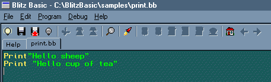
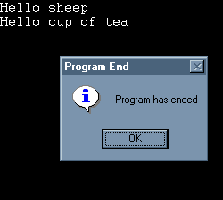

Blitz Basic uses a specially designed and easy to use programming language so that it is easy to follow and requires no previous knowledge of programming, just a love of games and your ideas.
So, welcome to the BASIC guide to Blitz - where the only restrictions are your imagination.
The sole purpose of this section is to teach you how to write your own Blitz Basic programs. The traditional description of a program is a task that you want your computer to perform via a set of instructions. The task is described to the computer using an instruction set Blitz Basic can understand.
The instructions in your program must be written using a set of rules known as Syntax. You must follow these rules if you are to write Blitz Basic programs. With lots of practice and a sprinkle of determination you will gain a firm and confident understanding about the general rules of BASIC and how to use them as a programmer
- When you have this working knowledge of Blitz Basic, the types of games you create are entirely up to you, but with a little imagination you could be writing the next hit game.
If you didn't know - BASIC is an acronym for Beginners All-purpose Symbollic Instruction Code. In this mini course you'll learn the BASIC language as implemented in Blitz and the planning of good programming structures.
Hello World Hello Me or Hello sheep! Hello cup of tea!
OK - lets start with the Print command - this simply prints any text onto your screen - like this:
print "Hello sheep"
print "Hello cup of tea"
End
just simply type it into your ide...

...and click on the red rocket to run....

Well done - you've just written your first Blitz program.
You can also include comments/notes in your programs - this is highly
recommended and is good programming practice also. You do this by placing a semi-colon (;) into your program
then just type your text eg:
Print "George Bray" ; This piece of code is for printing your name to the screen
You can also stop the machine with the End command - this will break your program
at any point that you want it to end.
You can give your code a title too by typing AppTitle "gamenamehere"
OK let's learn how Blitz works in interpreting your programs and what you'll need to know to write them...
Data
These are the main items in programming. Data is represented to in three basic forms. The first is a whole number which is known as an Integer eg. 8,20,100,1000. The second type is a Real Number, this allows decimal
points eg. 1.2, 48.20, 100.4, 3000.201. The third type of data is a String which is basically
something that is not a number, all strings consist of characters enclosed within quotation marks.
A string can include numbers eg "A", "1", "Blitz Basic", "Commodore 64", "Sheep".
Variables
A Variable is used to store Data - to simplify this - Imagine a Variable as
being one big box and within that box you can store an item plus more boxes if required.
An example would be:
A = 2 + 2
You can also print the contents of a variable to the screen:
A = 2 + 2
Print A
Another example would be:
A = 1
B = 2
C = A + B
PRINT C
If we break this down - we have 3 variables here A & B - which store 2 numbers
and finally variable C which is a calculation that is based on the values stored within variables A & B
so the calculation is actually C = 1 + 2. The result is then stored in C and printed to the screen.
Variables can also store Real Numbers and Strings In order to allow a variable to store these other types of data,
you must make sure you tell the computer whether it is a Integer, Real Number, or a String
variable. To specify a real number variable, you must add a hash sign (#) as the last character
of the variable name. If you want your variable to store a string, you must add a dollar sign ($) as the last
character of the variable name eg:
A# = 1.2
B$ = vic20
Print A#:Print B$
You can also create mathematical functions using String variables eg:
A$ = "Welcome to "
B$ = "the world "
C$ = "of programming."
D$ = A$ + B$ + C$
Print D$
When you run this program, it will print Welcome to the world of programming on your screen.
Easy eh?
Arrays
Arrays are very important because you can store lots of data under a single name.
You can even pinpoint an item of data and use it from within an array. If for example
you want to store 7 days of the week, you would have to create 7 different
variables eg.
day0$ = "Monday"
day1$ = "Tuesday"
upto
day6$ = "Sunday"
But with an Array
you can create a different kind of variable that can store more than one item of data.
eg. For days of the week you might go:
Dim day$(6) ; Dim the array... 7 elements (0 to 6)
day$(0)="Monday" ; Set the array data
day$(1)="Tuesday"
You can then just include:
Print day$(3)
Which would print Thursday
To print the seven days of the week we would include a FOR NEXT loop
for example:
For loop = 0 to 6
Print day$(loop) ; loops through and prints the data.
Next ; this continues until loop is equal to 6 then continues with the next line of your program.
You can also you the STEP command when creating a FOR/NEXT loop eg. If you
were to create a FOR/NEXT loop followed by STEP 2 the computer would count
up the for next loop in increments of 2 eg. 2, 4, 6. So if we were to apply this to our days of the week
program:
For loop = 0 to 6 step 2
The computer would then print only Monday Wednesday Friday & Sunday.
You can also step backwards by placing a minus (-) sign after the command with the number of steps backwards you would like to take:
For A = 10 To 0 step -2
Print A
Next
This would print: 10 8 6 4 2 0
One final point on Arrays - As documented earlier they are very versatile as they can store many
levels of data so by:
Dim day(7,5)
Here we are setting up the arrays 0 - 6 but for each one there is another
5 boxes of data numbered 0 - 4 upon which more data can be stored. So if you
think back to your boxes - here we have 7 boxes with 5 boxes inside, so in all
you can store 35 values (7x5) in this array. So data entry into the Array you would
create something like this:
day(0,0) = 10
day(0,1) = 20
day(0,2) = 30
day(0,3) = 40
day(0,4) = 50
day(1,0) = 100
day(1,1) = 200
day(1,2) = 300
day(1,3) = 400
day(1,4) = 500
As you can see arrays need to be declared as a particular type - Integer, Real Number & String.
You can have an array of integer, real numbers or strings but you cannot have multiple
types in the same array.
Mathematical Commands
The dreaded mathematical side of computers but DON'T PANIC - I'm no mathematician either.
I'll just give you a quick run down on the "boring" side of things - don't worry - with
a little patience you will be familiar with all these functions in no time as
we will make the computer do all the hard work. Just relax - make a nice steaming hot cup of tea & read on.....
OK - lets start with the easiest stuff - Add, Subtract, Divide and Multiply.
In computer terms these are represented by(+) (-) (/) (*) respectively.
A simple example would be:
A = 2 + 2
B = 2 * 2
C = 2 - 2
D = 2 / 2
Print A: Print B: Print C: Print D
The result would print: 4 4 0 1 to the screen - But you knew that....
You can also assign letters in mathematical functions:
A + B
A - B
A * B
A / B
Boolean Stuff
This is where you must have a cup of tea in your hand because it's time to focus!
Once you've cracked this - you are well away to mastering the normally hated mathematical
side of programming...
OK - Here goes...Sitting comfortably?
Boolean operators allow your program to perform logical operations on
your data.
We have the AND and OR operator - this works with any integer.
The basics are (study the logic in these examples - it is pretty straight forward)
agecategory$=Input("What is the age restriction on this film 15 or 18? ") ; Asks a moderator to set the age rating for a film
age$=Input("What is your age: ") ; Then asks a viewer their age
If agecategory$ = 18 And age$<18 Or agecategory$ = 15 and age$< 15 Then Print "Your are not allowed to view this film - Sorry" ; using AND OR expressions decides if they are too young
If agecategory$ = 18 And age$>18 Or agecategory$ = 15 And age$>15 Then Print "Enjoy your film." ; Using AND OR expressions decides if they are old enough
WaitMouse ; waits for the mouse button to be pressed
End ; Once the mouse button has been pressed - Ends the program.
We can compare not only numbers, but strings (text) also. We have seen '=' used
in 'agecategory$ = 18' so what does 'less than' & 'more than' mean for strings?
One thing it does not mean is 'shorter than', so we don't make that
mistake. We make the definition that one string is less than another
if it come first in alphabetical order, thus
Smith < Smythe
Smythe > Smith
Sheep < Shop
Shop > Sheep
all hold. <= means is 'is less than or equal to'and so on - just
as for numbers.
We then have the NOT operator.
This is simply used to say:
If agecategory$ not <> 18 - Is the same as A = B. It really is that straight forward.
You will discover how useful these operators become when writing conditions for your programs.
Storing DATA using the READ command
Storing data will become an important and useful way to hold and read
numbers or strings (text) easily. These can be used for storing many
different types of data eg. Level Data (formations that aliens might attack or
data for landscapes/scenery within your game etc). Here's a basic example of the READ/DATA
commands:
Example1
Read a,b,c ;read next 3 data items into variables a, b and c
Print a+","+b+","+c ;print out their values
Data 1,2,3 ;the actual data items
Example 2
Restore second ;start reading data from the '.second' label
Read a,b,c ;read in data
Print a+","+b+","+c ;print out variables
Restore first ;start reading data from the '.first' label
Read a,b,c ;read in data
Print a+","+b+","+c ;print out values
.first
Data 1,2,3 ;data items
.second
Data 4,5,6 ;more data items
You may have notice that I threw in the RESTORE command within example 2. This is used
to reset the data pointer at any time. In a games programming environment
you may need to read the same data again eg. If you want to clear the
screen & redraw it using your data table - by resetting the pointer
the Read command will start at the top of the data list and you can read it again.
GOTO Command
I always remember this command by saying goat-to in my head when calling this command :) - OK - type in following:
Print "Emily & Ellis were here today"
Goto goat
.goat
Print "So was George and his furry animals"
So here we are printing our text - then jumping to a label called .goat
the program then continues reading the rest of your program from the label you
have set downwards.
Subroutines
Often a particular sequence of commands gets used several times too within a program.
You may be able to avoid writing the sequence several times by judicious
use of GOTO commands; but this isn't always good enough. The command
GOSUB is like a GOTO that remembers where it came from on meeting
another command RETURN the program jumps back to the line after
the particular GOSUB that it originally started from. The GOSUB
must be followed by a label eg. Gosub sheep which sends the program
to the series of commands beginning on line .sheep - The part of
the program that lies between .sheep and the RETURN command
is known as a subroutine. An example of the GOSUB command would be:
Print "Baa Baa" ; Prints text to the screen
Gosub sheep ; Goes to the subroutine .sheep
WaitMouse ; The computer return(s) here! - waits for the mouse button to be pressed
End ; End(s) the program when the mouse button has been pressed.
.sheep ; subroutine sheep
Print "Blitz Basic" ; Prints text to the screen
Return ; Return(s) to the next line after gosub command.
FOR NEXT Commands
OK - I'll breifly explain the FOR...NEXT commands - these beasts
have already been used in an earlier example if you never realised!
These two commands create a technique known as a loop - so your computer
performs any given task several times. Try out the following program.
follows.
For a = 0 To 100 ; set up loop with a as a counter ranging from 0 (start) to 100 (finish)
Print a ; prints the current value of a
Next ; Is a 100? No, it's 1. Add 1 to a to get 2 and go back to line Print a
Your program continues here... ; When a does equal 100 the program ends the loop and continues to run here.
The result will be that the computer prints the numbers 0-100 on your screen.
STEP size
When you are creating a loop - you can also write it as below.
For a = 0 To 100 Step 10 ; The same as the previous example except the computer will count in STEPS of 10 at a time
Print a ; Prints the current value of a
Next ; If a does not equal 100 then add 10 to it and goes to the line above Print
Your program continues here... ; When a does equal 100 the program ends the loop and continues to run here.
So the program will now give the result:
0
10
20
30
40
50
60
70
80
90
100
As opposed
to printing out 1-100 sequencially - as per previous FOR...NEXT loop example.
Functions
Using functions - Part 1
Now that you are getting to grips with the very "basics" of Basic
programming (eg. For...Next)!
A function allows you to run a commonly used piece of code. For
example, this is a function which prints "Hello" to the screen
whenever you "call" it:
Function PrintHello ()
Print "Hello"
End Function
For a=1 To 5 ; Let's print "Hello" 5 times by calling the PrintHello () function:
PrintHello ()
Next
Now run the program to see the result.
Using Functions - Part 2
OK, now we'll modify the function so that it'll print whatever we
want, which can be different each time we call it.
The function:
Function PrintSomething (a$)
Print a$
End Function
; In this case, we "pass" a string (either a string variable such as blah$,
or a piece of text enclosed in quotes, eg. ("Hello there") to the function
PrintSomething ("Hello, I'm gonna be printed.")
PrintSomething ("So am I.")
; Using a string variable
sentence$="This is also being printed to the screen."
PrintSomething (sentence$)
So, whatever is put within the brackets () when you call it is
"passed" to the function. If you look at the function itself, you'll
see that it takes the form "PrintSomething (a$)", which means it's
expecting you to pass a string variable, as we've done above.
Note that "a$" could be named anything at all - "b$" "sometext$" whatever.
Look inside the function, and it takes whatever is passed into its
"a$" parameter and uses it in the Print call ("Print a$").
As an exercise, try changing "a$" to "b$". Make sure you change "a$" to "b$"
all throughout the function, or it won't work! Do that before continuing, then run it.
Here's what you should have ended up with:
Function PrintSomething (b$)
Print b$
End Function
Now try changing the string to something of your own choosing (as long as
it ends with the $ string sign!)
Using functions - Part 3
OK, so that was a very simple function call, where a function basically acted like
any other command. Now we'll look at another way to call functions. We can have them perform
a calculation and "return" a value to us.
The function:
Function JoinString$ (a$)
Return "You passed: "+a$
End Function
; Again, we "pass" a string to the function, but this time, we store what the function returns.
mysentence$=JoinString ("Hello, I'm gonna be printed.")
Print mysentence$
Run the program as before - now what happens here?
First of all, looking at the function itself, we know we're returning a string
from the function (it's joining "You passed: " onto whatever string you pass to it), so we add
a $ (string) sign to the name of the function ("JoinString"), which gives us "JoinString$".
The "Return" statement passes the joined string back to where we called it. Remember,
this is why we added a "$" to the name; we're returning this STRING.
Calling the function, we simply pass whatever string we want, and it's received into
our string variable (in this case, "mysentence$"). So mysentence$ becomes "You passed: Hello,
I'm gonna be printed." once we call the function.
Some exercises:
Try changing the name of the variable "mysentence$" to something of your own, eg. b$,
something$, whatever. Note that you'll have to change it in the Print statement too! Run it.
Change the "You passed: " string within the function to something else, and change
the string you're passing ("Hello, I'm gonna be printed"). Run it. Try a few different things.
Using Functions - Part 4
By default, a function returns either:
0 - (zero) for numeric values
"" - (an empty string) for string type functions
Function AddOneAndOne ()
a=1+1
End Function ; This will return 0, because we haven't told it to actually return the result of 1+1!
Print "Result of AddOneAndOne: "+AddOneAndOne () ; Try adding a line saying "Return a" (without the quotes!) to the AddOneAndOne
function, then run it again. NOW it returns the value!
Function GimmeString$ ()
a$="If you can read this, you must have fixed this function!"
End Function
b$=GimmeString ()
If b$=""
b$="GimmeString doesn't return a value!"
Else Print b$
EndIf
Print "Result of GimmeString (): "+b$
Exercise: add the necessary line to the function so that it returns a$, then
run it again.
IF...THEN Commands
The IF statement works out the condition of something as either true or false.
If the condition is true then the statement after THEN is executed, but otherwise it
is skipped over. The most useful conditions compare two number or two strings. You can test
whether two numbers are equal, or whether one is bigger than the other and they can test whether
two strings are equal, or whether one come before the other in alphabetical order. They use the
relations =,<,>,<=,>=, and <>. If you've not experienced
these signs before they represent the following:
Sign Meaning
= Equals
< is less than
> is greater than
<= is less than or equal to
>= is greater than or equal to
<> is unequal to
Take the following example:
.start ; sets up the label start
question$ = Input ("Shall I tell you the meaning of life yes/no? " ; prints a question - waits for users input
If question$ = "no" Then Print "Alright, Then I won't"; IF input = no THEN print text
If question$ = "yes" Then Print "42" ; IF input = yes THEN print text
If question$ <> "yes" Or "no" Then Goto start ; IF input is not equal to either yes or no THEN GOTO start
We can also achieve the same effect with numbers too:
number = Input ("How old are you ") ; prints a question - waits for users input
If number < 18 Then Print "You are under 18" ; IF input is smaller than 18 THEN print text
If number > 18 Then Print "You are over 18" ; IF input is greater than 18 THEN print text
If number = 18 Then Print "you are 18" ; IF input is equal to 18 THEN print text
The expression IF THEN can be any combination of values, variables, arrays and operators providing the expressions are logical.
IF ENDIF
On a similar principal to the IF command - instead of a THEN command
ENDIF points to the end of the commands to be executed - the example below
shows you this principle:
commodore = 20 ; sets up the variable for commodore
atari = 20 ; sets up the variable for atari
If commodore = atari ; IF both variables are the same...(execute the code between here and ENDIF)
Print "Welcome to the machine - commodore and atari..." ; code to be executed if the values are the same.
EndIf ; Execute and ENDIF they are equal
The above code is the same as typing:
IF commodore = atari THEN PRINT "Welcome to the machine - commodore and atari..."
If you change the values of commodore and atari - so they are both different - see the end result?
You can also make your program follow a different chain of events if the values are not equal to.
Here we introduce the ELSE command - so you would point this to a different
piece of code that you wanted to execute - like below:
IF commodore = atari
PRINT "The values are equal to"
ELSE
PRINT "The values are different"
ENDIF
You must remember that when the command THEN is not used you must
use ENDIF - You will should also note that ENDIF
is used whether or not the ELSE command is used.
Types
Using normal arrays (as documented earlier) we can store important information
about, for example, our players' positions:
player = 3
x = 640
y = 480
Dim players (player, x, y)
players (2, 100, 100) ; this sets player 2's on-screen position to x = 100, y = 100
This is fine, but what if we want to add more players? We have to re-Dim the
array with the maximum number of players! It can also be quite difficult to
remember what each element in the array stands for when you have a lot of
elements, eg.
Dim playerdata (player, x, y, animframe, weaponselected, lives, rockets,
jewelscollected, blah, blah2)
Try just changing the "rockets" element later on when you can't see the
actual list of elements without scrolling all the way back up!
A way around this general awkwardness is to use types. Whereas with the
array, we made a "playerdata" array, here we'll make a "playerdata" type
instead:
Type playerdata
Field player
Field x
Field y
Field animframe
Field weaponselected
Field lives
Field rockets
Field jewelscollected
Field blah
Field blah2
End Type
Think it looks complicated? Well, let's take a look:
Type playerdata
This line simply creates a new type (you'll also hear types referred to as
"objects", so this might be called a "playerdata object").
Field player
Field whatever
The field lines simply say what information we want to hold in the
playerdata object.
End Type
This just signifies the end of our type definition. Don't forget it!
OK, in the array example, we wanted to change the rocket element (we'll give
'em 1000 rockets), which would mean typing something like:
playerdata (player, x, y, animframe, weaponselected, lives, 1000,
jewelscollected, blah, blah2)
Ouch, what a lot of typing! And I hope you remembered the order of the items
(gosh, and you probably had to scroll all the way back up to find the
definition of the array elements as well)! The efficient (read: cleverly
lazy) programmer will use types instead. Using our playerdata type:
playerdata\rockets = 1000
Now, not only is that shorter, but we didn't have to remember where to place
the rockets value either (in fact, we couldn't even accidentally put it in
the wrong place, since we're specifically saying "makes the rockets value
equal 1000").
Note the way we access the type data, with a backslash like this: \
To read the jewelscollected value into a temporary variable and show the
value, we'd do this:
temp = playerdata\jewelscollected : Print temp
Of course, there's nothing to stop us printing the value directly:
Print playerdata\jewelscollected
One very important aspect of using types is that you must tell Blitz that
you're going to be assigning a variable with a custom type. If we want to
make two players using the playerdata type, we do this:
player1.playerdata = New playerdata
player2.playerdata = New playerdata
This can be read as "create a new playerdata object called player1" and
"create a new playerdata object called player1". From here on, we can do
whatever we like with our newly defined player objects.
It's important to remember this step, as you can't simply do this:
player1.playerdata\rockets = 1000
...without first creating the player1 playerdata object, as above!
To recap, if we want to use an object called "zoolook", of type
"whatever", we do this:
; Define our object structure:
Type whatever
Field something
; As many fields of information as needed for the zoolook objects
End Type
zoolook.whatever = New whatever
Now we can use our zoolook object.
Where types can become really powerful is if we just need a heap of
similar objects (for instance, the aliens in a "Space Invaders" clone), and
want an easy way to define and manipulate them.
Type invader
Field x
Field y
End Type
We can set up a huge number of alien invaders with a simple loop:
For a = 1 to 100
alien.invader = New invader
alien\x = Rnd (GraphicsWidth)
alien\y = Rnd (GraphicsHeight)
Next
This appears to keep redefining a single object over and over! The strange
thing about types, though, is that when we create a new object, we're
actually creating a *reference* to an object, rather than the object itself.
Every time you say:
something.mycustomtype = New mycustomtype ; a new "customtype" called "something"
...you're saying "create a new 'mycustomtype' object, and give me a
reference to it; call my reference 'something'".
Although we can refer to them individually if we define objects with
individual names (eg player1.playerdata, player2.playerdata), we can also
ignore the names completely. If we give the same name to more than one item
of a particular type, we're just adding to a hidden list of those objects,
which we don't need to access individually. To draw all of our aliens, we'd
simply do this:
For nasties.invader = Each invader
DrawImage invaderimage, nasties\x, nasties\y
Next
Note the importance of giving our For...Next variable (nasties) an
"invaders" type while we read through our list of "invaders".
So, to recap, whenever we create a new object, we're really adding to a
hidden list of objects of that type. When we want to be able to refer to
each individual object, we give each a different name:
Type playerdata
Field x
Field y
End Type
player1.playerdata = New playerdata
player2.playerdata = New playerdata
The computer adds each object to its hidden list of "playerdata" objects,
which might look like this:
xxxxx1.playerdata [player1]
xxxxx2.playerdata [player2]
...but it doesn't matter to us how the computer stores its hidden list - we
just refer to player1 and player2.
If we don't need to be able to access each item individually, we can do
this:
Type blah
Field whatever
End Type
For a = 1 to 3
myobject.blah = New blah
myobject\whatever = 5
Next
The above example creates a hidden list of "blah" objects, and sets the
"whatever" value of each to 5. To the computer, they might be stored in some
abstract form which we have no knowledge of, eg:
xxxx1.blah [myobject]
xxxx2.blah [myobject]
xxxx3.blah [myobject]
Obviously, we can't read individual objects from this list, because we gave
them all the same name! But we don't care; we didn't want to - we can read
them "en masse" by using the For...Each...Next loop:
For a.blah = Each blah
Print a\whatever
Next
Taken apart, we get this:
For a.blah = Each blah
This reads each "blah" object in turn into a temporary object called "a",
which has a "blah" type (so it can store the same data as our "blah"
objects).
Print a\whatever
This prints out the contents of the temporary "a" variable's "whatever"
field.
Next
This is just the normal "Next" used in a For...Next loop.
There's a lot more to types (hence their awesome power!), but this has
basics, which will get you started!
OK Now that you've covered the Basics look in the Blitz manual
for a synopsis of the more advanced commands :)